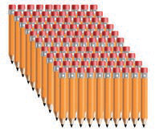
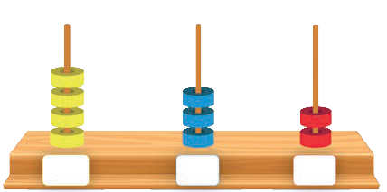

Sura ya
Tatu
Tatu
Kuhesabu vitu
Tuhesabu vitu katika mamoja, makumi na mamia
Vitu vinaweza kuhesabiwa katika mamoja, makumi na mamia.
Mfano wa kwanza
Hesabu / Tambua penseli zifuatazo. Andika jumla yake kwa maneno.
| MamiaPicha hii inaonesha kundi moja la penseli mia.Mamia moja | MakumiPicha hii inaonesha makundi nane ya penseli kumi kwa kila kundi.Makumi manne | MamojaPicha hii inaonesha penseli mbili zikiwa kivyake.Mamoja mawili |
|---|---|---|
 | ||
| Mia moja arobaini na mbili. | ||
Mfano wa pili
Hesabu / Tambua kisha andika jumla yake kwa maneno.
mamiaPicha hii inaonesha pete nne kwenye safu ya mamia.4makumiPicha hii inaonesha pete tatu kwenye safu ya makumi.3mamojaPicha hii inaonesha pete mbili kwenye safu ya mamoja.2

Mia nne thelathini na mbili.
13